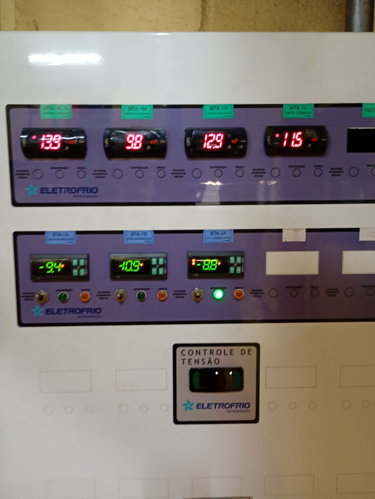
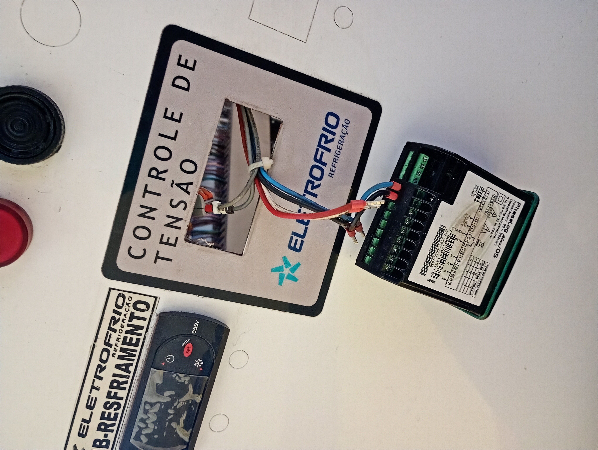
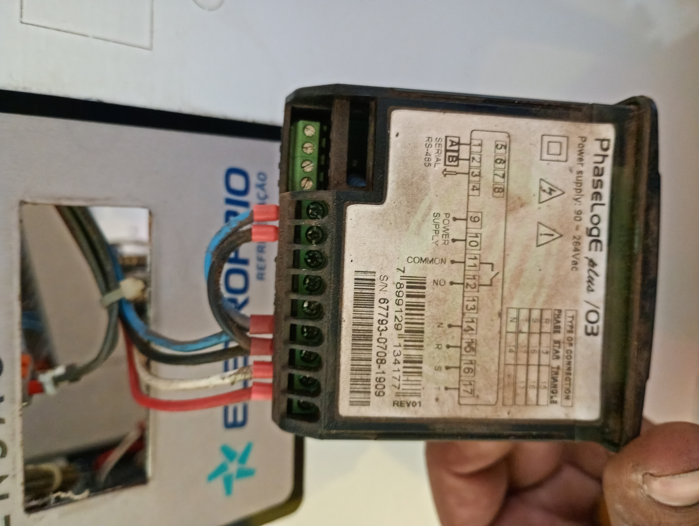
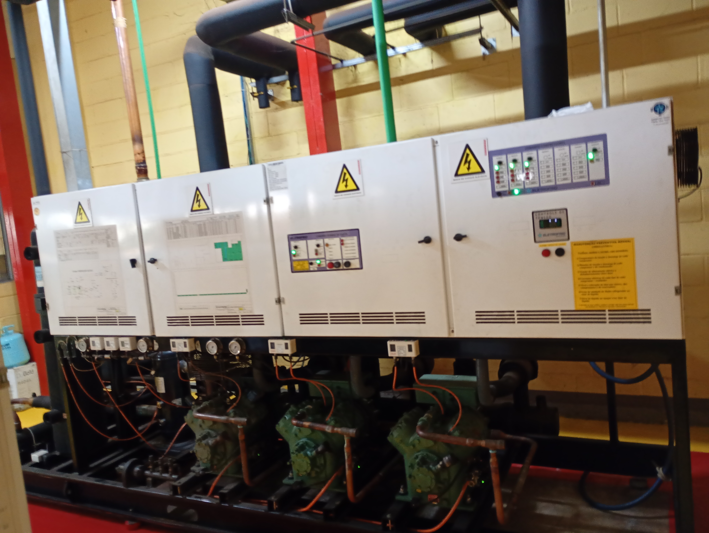
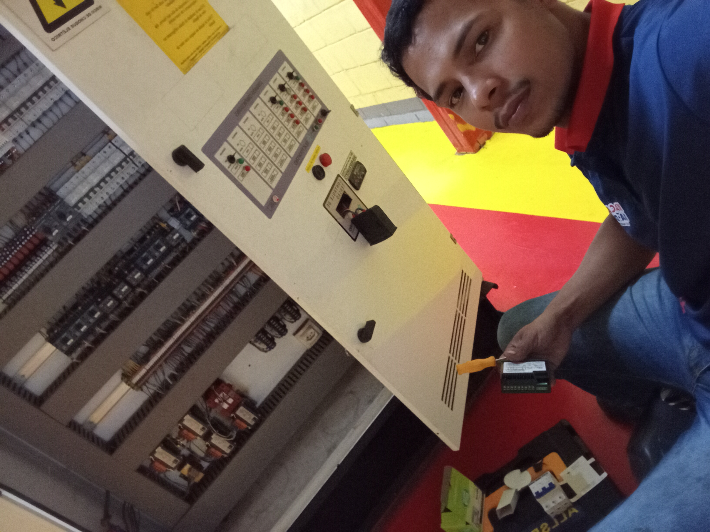

👨🔧 Sobre Mim
Olá! Sou apaixonado por elétrica e estou aprendendo cada dia mais sobre essa área essencial. Aqui vou compartilhar tudo o que aprendo, desde conceitos básicos até montagem de quadros e circuitos completos. Meu objetivo é guardar meu conhecimento e ajudar outras pessoas que também estão começando!
📚 O que já aprendi
🔌 Componentes Básicos
Conheço os tipos de fios, cabos, disjuntores, tomadas e interruptores. Entendo para que serve cada um e como escolher o modelo certo para cada uso.
📐 Montagem de Quadros de Distribuição
Aprendi como organizar os disjuntores, fazer a distribuição de circuitos, ligação de barramentos e importância da ordem e limpeza na instalação.
🔢 Cálculos Simples
Noções básicas de corrente, tensão, potência e dimensionamento de fios, sempre seguindo as normas técnicas.
🛡️ Segurança em Primeiro Lugar
Na elétrica, segurança não é opção, é regra! Algumas coisas que aprendi:
- Sempre desligar a chave geral antes de mexer em qualquer instalação
- Usar EPIs adequados: luvas, óculos, calçado isolante
- Respeitar todas as normas técnicas (NBR 5410)
- Nunca fazer gambiarras ou ligações improvisadas
📋 Registros de Trabalho
Aqui anoto todos os serviços que executo, detalhes, materiais usados e o que aprendi em cada um.
🔌 Instalação de Tomadas e Iluminação - comercial
📅 Data: 16/05/2026 e 30/05/2026 | 📍 Local: Atacadão


📝 O que foi feito:
Instalação de 2 tomadas num circuito já existente para freezers que mudaram de local. Foi feito o calculo de carga para identificar se a afiação e disjuntor suportariam a nova demanda. Calculando quanto os aparelhos irão consumir de energia, com I=P/V. Sabendo que fio de 2,5mm² é ate 20A, 4mm² é para 32A e 6mm² é para 40A, descubro quanto de potência (W) já esta sendo usada no circuito com alicate amperímetro para descobrir se vai suportar a carga adicional e garantir a segurança e eficiência da instalação.
🧰 Materiais utilizados:
- Fio flexível 4mm² e 2,5mm² ( cores diferenciadas )
- Eletroduto galvanizado 3/4"
- Caixas de passagem 4x2"
- Tomadas e sensor de sobrepor
- Terminais e fita isolante de alta qualidade
💡 Observação/Aprendizado:
Cuidado especial na hora de passar os fios para não romper a isolação. Sempre testar continuidade e tensão antes de entregar o serviço ao cliente. Organização dos fios dentro da caixa facilita futuras manutenções.
⚡ Manutenção no Quadro de Comando da Refrigeração Comercial
📅 Data: 22/05/2026 | 📍 Local: Comercial




📝 O que foi feito:
Realizada análise e manutenção preventiva/corretiva no quadro de comando da refrigeração comercial. Inicialmente foram verificadas as tensões da rede, medições de amperagem dos cabos e funcionamento geral do sistema. Após abertura do quadro, foi feita inspeção dos compressores e componentes elétricos, constatando que estavam operando normalmente. Durante a análise, foi identificado defeito no medidor/controlador de tensão, que apresentava leituras incorretas. Foi realizado o registro fotográfico da ligação original para garantir a reinstalação correta, seguido da substituição do equipamento e refazimento completo das conexões no novo controlador. Aproveitando a intervenção, também foi realizada inspeção geral no quadro elétrico, onde foi identificado um disjuntor trifásico com defeito mecânico/elétrico, permanecendo uma das fases energizada mesmo após o desligamento. O componente foi sinalizado para substituição, garantindo maior segurança e confiabilidade ao sistema.
🧰 Materiais utilizados:
- Medidor/controlador de tensão
- Alicate amperímetro
- Alicate decapador
- Alicate universal
- Terminais eletricos tipo ilhos
- Fita isolante de alta qualidade
- Chave de fenda e Philips
- Luvas de proteção/tatica
- Botas isolantes
- Cabos e conexões eletricas para reaperto e organização
💡 Observação/Aprendizado:
Importante respeitar a ordem dos disjuntores e o dimensionamento correto para não sobrecarregar os circuitos. A identificação clara é fundamental para segurança e agilidade na hora de desligar algo.